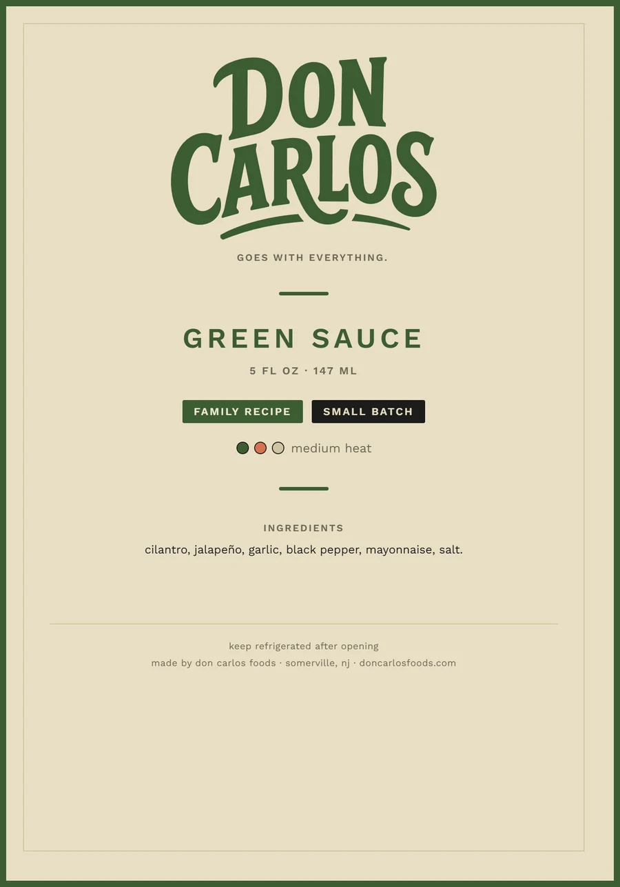
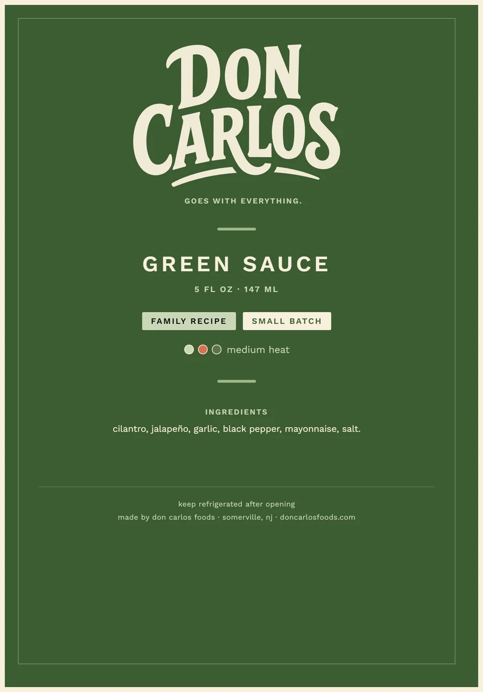
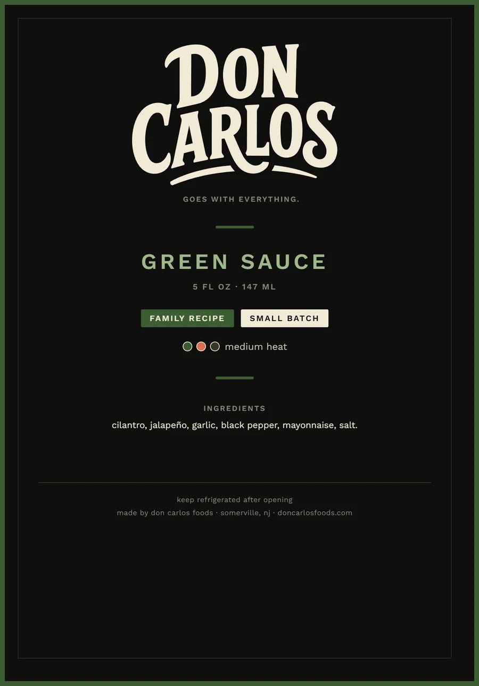
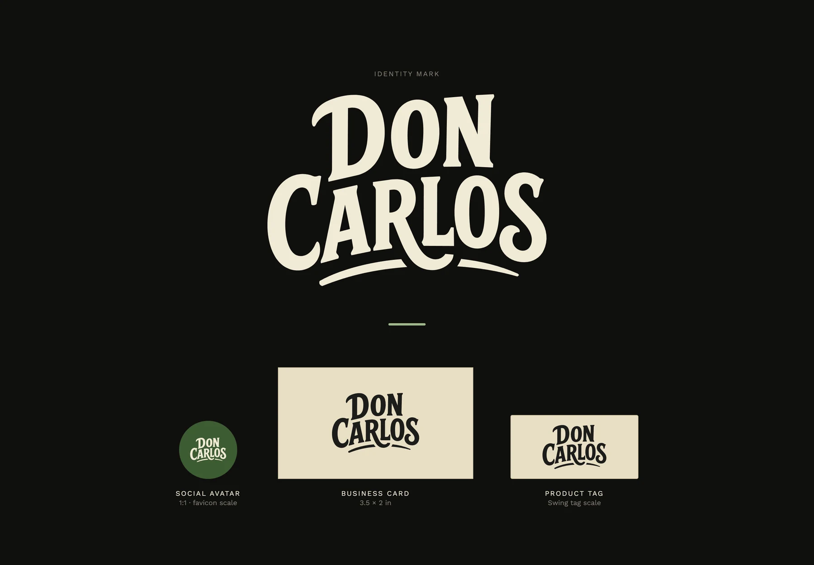
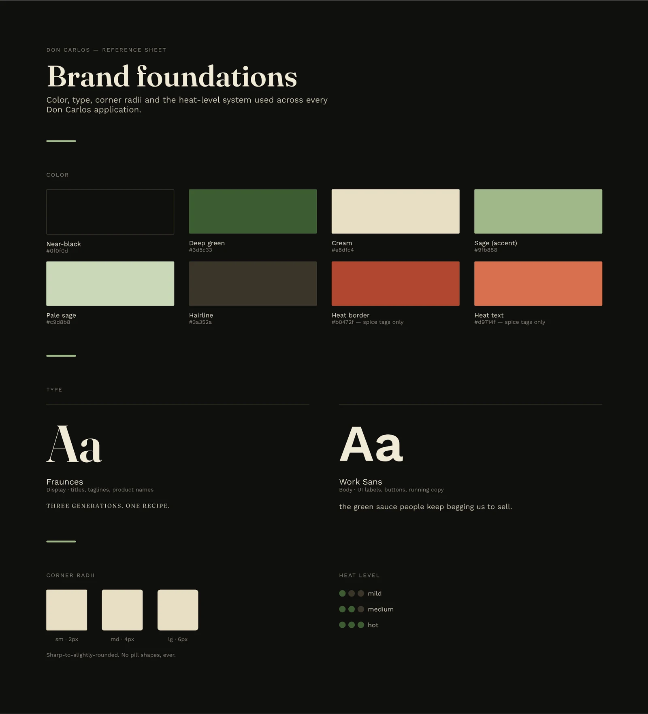
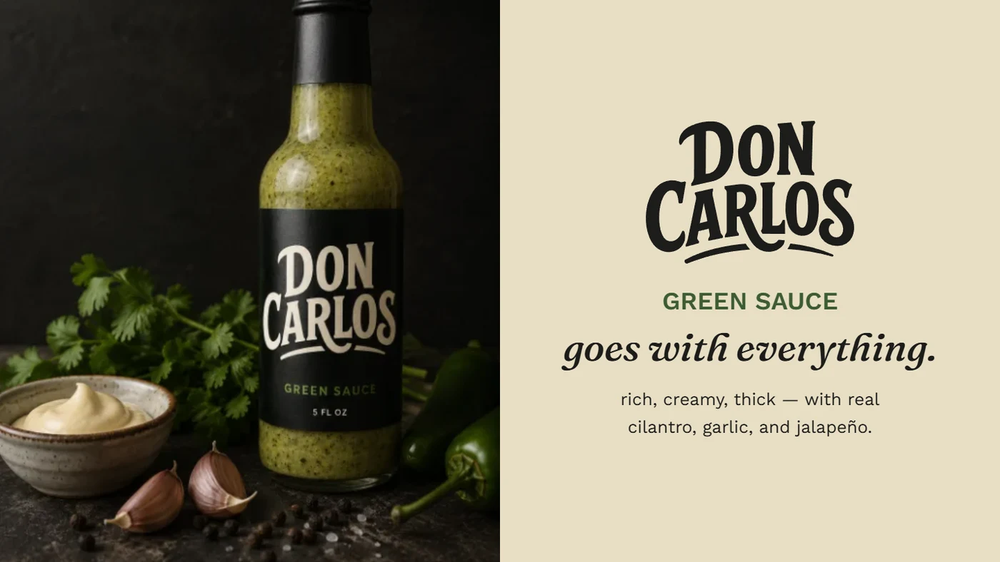
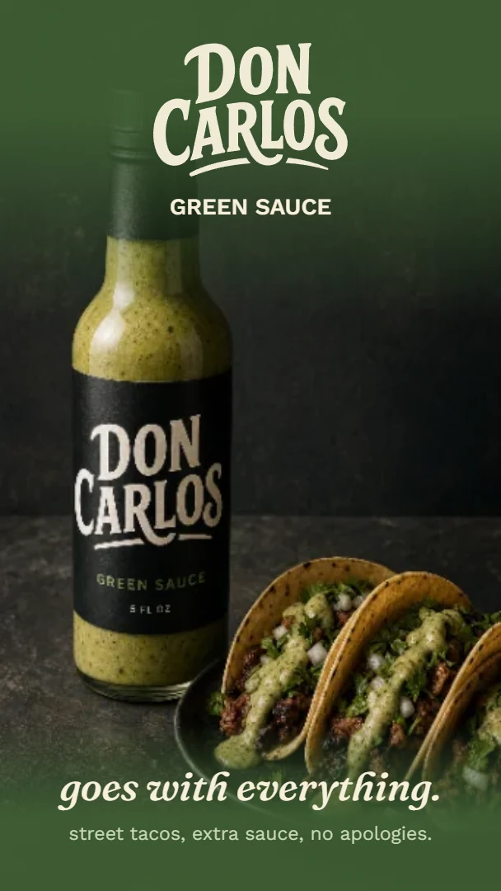
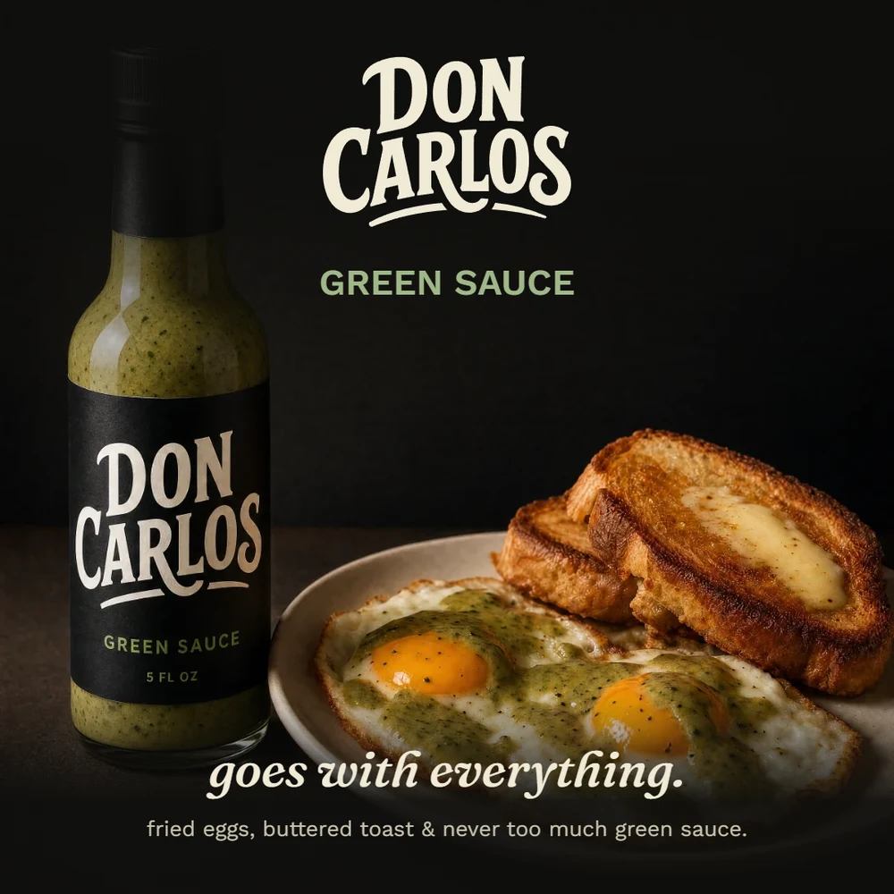
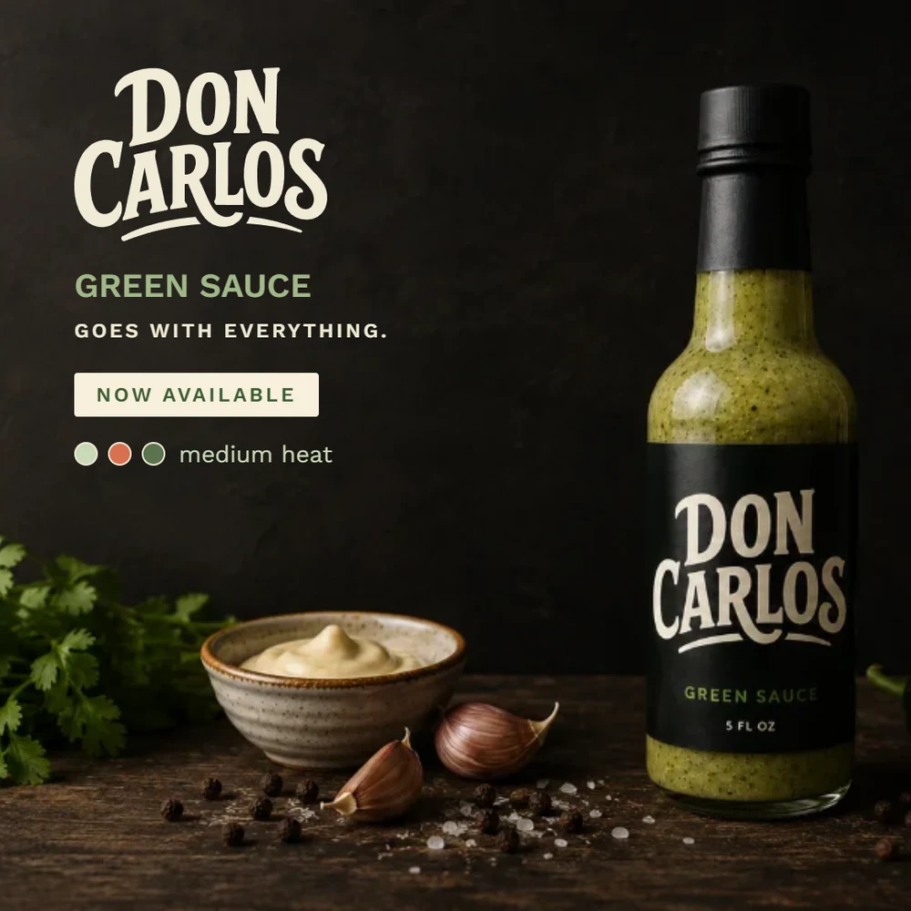
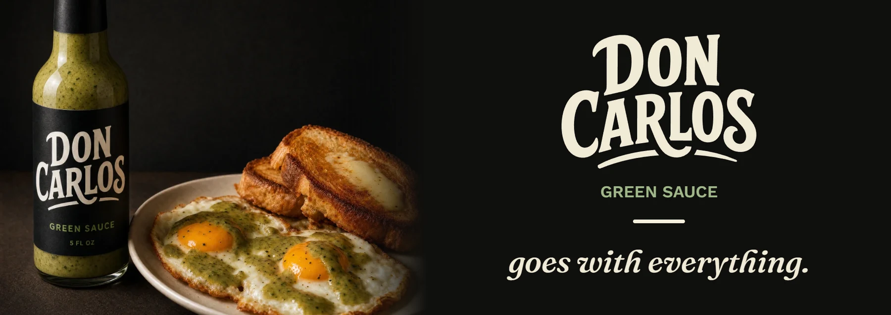

Don Carlos Green Sauce Packaging & Identity
A label, a campaign, and the system underneath both, built to read as an established heritage brand from the first sketch.

The Brief
Don Carlos carries three generations of family legacy (a grandmother's restaurant, a father's nickname) bottled today as a single product, Green Sauce. The identity had to feel dignified and earned, like a brand that had been around for decades, not a launch. Never rustic-farmers-market, never AI-generic.
The Approach
Rather than jump straight to the label, we built the full system first (type, color, components) before any real deliverable existed. Every piece that followed, from the bottle to the ad campaign to the wordmark itself, draws from that one foundation. Nothing was designed as a one-off.
The System
Three approved backgrounds, one accent green used only to signal product, Fraunces paired against Work Sans for deliberate display/body contrast, a sharp-to-slightly-rounded corner scale, and a dot-based heat-level component built once and reused everywhere spice needed signaling.
Key Decisions
Three calls that shaped everything downstream of them.
A wordmark-only identity
We rejected the instinct to add a chili icon or illustrative decoration, even when early ad compositions felt like they needed something more to signal "hot sauce" to someone unfamiliar with the brand. The custom hand-lettered wordmark had to carry full weight on its own. Reaching for decoration would have been a shortcut, and the single most common visual cliché in the category besides.
The tagline pivot
The first pass landed on "three generations. one recipe." It was true, but generic enough to belong to any heritage food brand. We replaced it with "goes with everything," a line rooted in what people actually say about the sauce firsthand. It's a small edit that puts the brand's own content principle into practice: specificity over cliché.
A flexible three-background system
Rather than lock the brand to one fixed palette, we built it to hold up across near-black, deep green, and cream. Rotating grounds across the label variants and campaign pieces wasn't about variety for its own sake. It was a stress test, proving the system's discipline (one accent color, one type pairing, held constant) rather than its rigidity.
Color System
Three complete background variants, not a single locked palette: each one a usable context on its own.
Green Sauce Label
One label, three approved backgrounds: cream for print and lighter applications, deep green for anything tied directly to the product, near-black for premium packaging and primary brand presence.



The Wordmark & The Foundation
The custom hand-lettered wordmark is the entire visual identity: no illustration, no chili icons, no clipart. If the brand needed decoration to feel authentic, the wordmark wasn't doing its job.


Campaign
Centered, editorial compositions: the wordmark as the hero, a short warm sentence of body copy, one background variant per piece. No stock photography, no lifestyle clichés.





Deliverables
The finished label, campaign, wordmark, and brand foundations spread, ready for the build on doncarlosdesign.com.

Launching a product that deserves to feel established?
Let's build the system before the deliverable, so nothing you ship after it feels like a one-off.